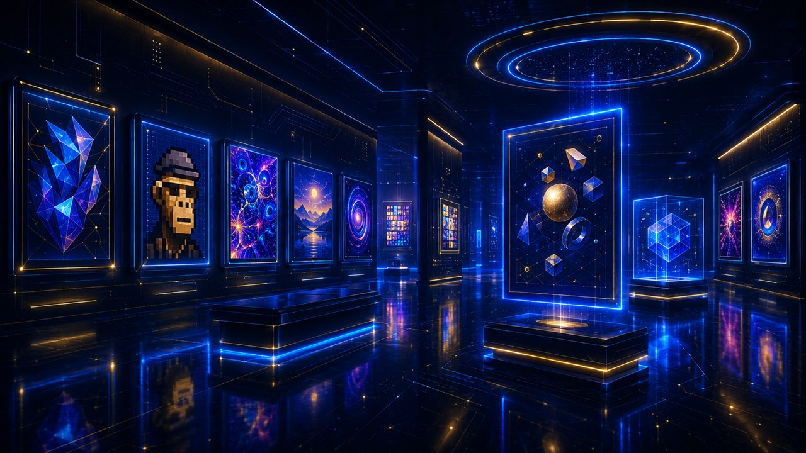

3.1 Koin vs Token
Perbedaannya terletak pada satu hal: apakah aset itu memiliki blockchain sendiri, atau “menumpang” di blockchain milik orang lain.
| Koin (Coin) | Token | |
|---|---|---|
| Definisi | Aset asli dari sebuah blockchain (Layer 1) | Aset yang dibuat di atas blockchain milik jaringan lain |
| Blockchain | Punya jaringan sendiri | Menumpang jaringan lain (mis. Ethereum) |
| Fungsi umum | Membayar biaya jaringan, mengamankan jaringan | Mewakili utilitas, hak suara, atau aset tertentu |
| Contoh | BTC, ETH, SOL | Token di atas Ethereum, dll. |
Koin punya rumah sendiri, token menumpang skema
Koin — blockchain sendiri
Aset asli yang mengamankan & membayar biaya jaringannya sendiri. Mis. BTC, ETH, SOL.
Token — menumpang jaringan lain
Banyak token bisa hidup di atas satu blockchain yang sama, memakai keamanannya.
3.2 Empat Jenis Aset yang Penting Dikenali
₿ Bitcoin (BTC) — Sang Pelopor
Aset kripto pertama dan terbesar. Fokus utamanya sebagai penyimpan nilai dan aset cadangan digital — sering dijuluki “emas digital”. Desainnya menekankan keamanan dan kelangkaan (21 juta), bukan kecepatan atau fitur rumit.
Ξ Ethereum (ETH) — Komputer Dunia
Jika Bitcoin adalah uang digital, Ethereum adalah platform membangun aplikasi. Inovasi terbesarnya: smart contract. Sebagian besar inovasi kripto modern (DeFi, NFT, token) lahir di atasnya.
◎ Altcoins — Selain Bitcoin
Istilah umum untuk semua aset selain Bitcoin. Banyak menawarkan fitur spesifik — kecepatan tinggi atau biaya rendah (mis. Solana, Cardano). Kualitasnya sangat beragam, dari proyek serius hingga berisiko tinggi.
$ Stablecoin — Penjaga Stabilitas
Dirancang mempertahankan nilai stabil, biasanya dipatok 1:1 terhadap dolar AS. Menjadi “tempat berlindung” dari volatilitas tanpa keluar dari ekosistem kripto. Dibahas lebih dalam di 3.5.
3.3 DeFi (Decentralized Finance) Lebih Dalam
DeFi adalah upaya membangun ulang layanan keuangan tradisional — menukar, meminjam, meminjamkan, menyimpan — di atas blockchain, tanpa bank atau perantara. Semuanya berjalan melalui smart contract yang transparan.
DEX (Decentralized Exchange)
Bursa terdesentralisasi memungkinkan pengguna menukar aset langsung dari dompet mereka, tanpa menitipkan dana ke pihak ketiga. Banyak DEX memakai mekanisme Automated Market Maker (AMM) — harga ditentukan otomatis oleh rasio aset dalam sebuah “kolam likuiditas” (liquidity pool). Contoh: Uniswap, PancakeSwap.
Liquidity pool & AMM interaktif
Harga ditentukan oleh rasio aset di dalam kolam, mengikuti rumus x·y = k — bukan buku pesanan.
Membeli Token A mengurangi stoknya di kolam; karena makin langka, harganya otomatis naik. Begitulah AMM menyesuaikan harga sendiri.
Lending & Borrowing
Protokol seperti Aave dan Compound memungkinkan pengguna meminjamkan aset untuk bunga, atau meminjam aset lain dengan menjaminkan miliknya. Khas DeFi: pinjaman umumnya over-collateralized — nilai jaminan harus lebih besar dari pinjaman, karena tidak ada penilaian kredit personal.
TVL (Total Value Locked)
Metrik populer untuk mengukur “ukuran” protokol DeFi: total nilai aset yang dikunci di dalamnya. Semakin tinggi TVL, umumnya semakin besar kepercayaan dan aktivitas — meski bukan jaminan keamanan.
3.4 Staking dan Yield
Aset kripto tidak harus sekadar “disimpan dan menunggu naik”. Ada beberapa cara membuat aset bekerja menghasilkan imbal hasil — masing-masing dengan risikonya sendiri.
Staking
Pada jaringan Proof of Stake, Anda bisa “menjaminkan” aset untuk membantu mengamankan jaringan, dan menerima staking rewards. Mirip mendapat bunga, tetapi aset Anda berkontribusi pada operasi jaringan. Beberapa jaringan butuh minimum tertentu (Ethereum: 32 ETH untuk validator penuh).
Liquid Staking
Masalah staking biasa: aset terkunci dan tidak bisa dipakai. Liquid staking (dipopulerkan Lido) menyiasati ini: Anda staking, lalu menerima token bukti (mis. stETH) yang tetap bisa digunakan di tempat lain — aset “bekerja ganda”, meski menambah lapisan risiko.
Yield Farming & Liquidity Pool
Strategi menyediakan likuiditas ke protokol DeFi untuk memperoleh imbalan. Imbal hasil dinyatakan dalam APR atau APY (yang memperhitungkan bunga berbunga).
Tangga imbal hasil & risiko skema
Makin tinggi potensi imbal hasil, makin tinggi pula risikonya. Arahkan kursor / ketuk tiap tingkat untuk detailnya — APY besar tidak otomatis berarti untung.
Saat menyediakan likuiditas berupa sepasang aset, perubahan harga relatif di antara keduanya dapat menyebabkan nilai aset Anda saat ditarik lebih kecil dibanding jika hanya menyimpannya. Imbal hasil tinggi (APY besar) tidak otomatis menguntungkan jika impermanent loss-nya juga besar.
3.5 Stablecoin Lebih Dalam
Tidak semua stablecoin diciptakan sama. Cara mereka menjaga nilai sangat menentukan tingkat risikonya.
Fiat-backed
Dijamin cadangan dolar/aset setara di rekening. Contoh: USDT, USDC. Paling banyak dipakai; risiko bergantung pada transparansi & kecukupan cadangan.
Crypto-backed
Dijamin aset kripto lain yang dikunci, biasanya over-collateralized. Contoh: DAI. Lebih terdesentralisasi, tetapi lebih kompleks.
Algorithmic
Menjaga nilai lewat mekanisme algoritmik tanpa jaminan penuh. Jenis ini terbukti paling rapuh.
Depeg adalah kondisi ketika stablecoin kehilangan patokan nilainya. Dua contoh historis: keruntuhan UST (Terra/Luna) pada Mei 2022, di mana stablecoin algoritmik memicu “death spiral” yang melenyapkan nilai puluhan miliar dolar; serta USDC yang sempat turun ke ~0,87 dolar pada Maret 2023 akibat kekhawatiran terhadap bank tempat cadangannya, sebelum pulih. Pesannya: kata “stable” tidak berarti tanpa risiko.
3.6 NFT (Non-Fungible Token)
Jika aset kripto biasa bersifat fungible (setiap unit identik dan bisa saling tukar, seperti uang), NFT bersifat non-fungible — setiap token unik dan tidak tergantikan. NFT berfungsi sebagai sertifikat kepemilikan digital atas suatu objek: karya seni digital, item game, musik, hingga representasi aset dunia nyata. Standar umum di Ethereum: ERC-721 (item unik tunggal) dan ERC-1155 (koleksi lebih fleksibel).
Fungible vs Non-Fungible skema
Fungible (mis. 1 ETH)
Semua unit identik & setara — bisa saling tukar tanpa kehilangan nilai.
Non-Fungible (NFT)
Tiap token unik & tak tergantikan — punya identitas sendiri, tak bisa ditukar 1:1.

3.7 Tokenomics: Ekonomi di Balik Token
Tokenomics (gabungan “token” dan “economics”) adalah studi faktor ekonomi yang memengaruhi nilai sebuah aset. Memahaminya penting untuk menilai apakah proyek sehat.
Pasokan (Supply)
Circulating (beredar saat ini), total (sudah ada), dan max supply (batas maksimal). Aset dengan max supply tetap bersifat deflasioner secara desain.
Inflasi vs Deflasi
Apakah pasokan bertambah (inflasi) atau berkurang (deflasi) seiring waktu? Ini memengaruhi tekanan harga jangka panjang.
Token Burning
Penghancuran sejumlah token secara permanen untuk mengurangi pasokan — strategi menambah kelangkaan.
Vesting & Alokasi
Bagaimana token dibagikan (tim, investor awal, komunitas) dan jadwal pelepasannya. Pelepasan besar di kemudian hari bisa menekan harga.
Tiga ukuran pasokan token data
Selisih besar antara circulating dan max supply menandakan banyak token belum beredar — berpotensi menimbulkan tekanan dilusi di masa depan (lihat juga FDV di Bab 4).
3.8 Konsep Pendukung Lainnya
Gas Fees (Biaya Transaksi)
“Gas” adalah biaya untuk melakukan transaksi atau menjalankan smart contract (di Ethereum diukur dalam Gwei). Besarnya bervariasi tergantung kepadatan jaringan: makin ramai, makin mahal — salah satu alasan utama lahirnya Layer 2.
Jenis Token Berdasarkan Fungsi
Utility Token
Memberi akses ke produk atau layanan tertentu dalam sebuah ekosistem.
Governance Token
Memberi hak suara dalam pengambilan keputusan sebuah protokol.
Security Token
Mewakili kepemilikan aset finansial dan tunduk pada regulasi sekuritas.
Meme Coin
Lahir dari budaya internet/meme; nilainya sangat spekulatif dan digerakkan sentimen komunitas — risiko sangat tinggi.
Web3 dan DAO
Web3 adalah visi generasi internet berikutnya di atas blockchain, di mana pengguna memiliki kendali lebih besar atas data dan aset digitalnya. DAO (Decentralized Autonomous Organization) adalah organisasi yang dikelola kolektif oleh pemegang token melalui pemungutan suara, tanpa struktur manajemen terpusat tradisional.
Bridge dan Interoperabilitas
Karena ada banyak blockchain berbeda, dibutuhkan “jembatan” (bridge) untuk memindahkan aset antarjaringan. Bridge memperluas kemungkinan, tetapi secara historis menjadi salah satu titik yang paling sering diretas — perlu kehati-hatian ekstra.
Oracle (Penghubung Data Dunia Nyata)
Smart contract tidak bisa mengakses data luar blockchain secara langsung. Oracle menjembatani ini — memasok data dunia nyata (harga aset, hasil pertandingan, cuaca) ke dalam smart contract secara tepercaya. Chainlink (LINK) adalah penyedia oracle paling dikenal.
Bagaimana oracle memasok data ke smart contract skema
Tanpa oracle, smart contract “buta” terhadap dunia luar. Oracle mengumpulkan & memverifikasi data, lalu mengirimnya masuk — klik node oracle untuk detail.